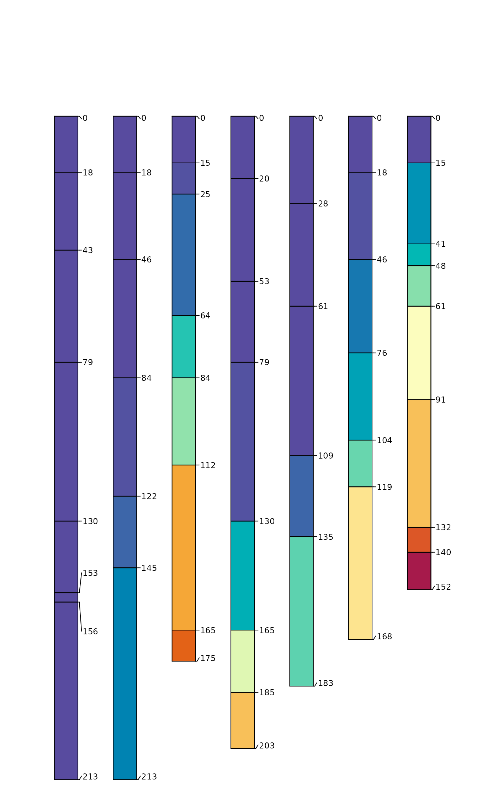

Select soil morphologic data from "Redoximorphic Features as Indicators of Seasonal Saturation, Lowndes County, Georgia". This is a useful sample dataset for testing the analysis and visualization of redoximorphic features.
Usage
data(jacobs2000)References
Jacobs, P. M., L. T. West, and J. N. Shaw. 2002. Redoximorphic Features as Indicators of Seasonal Saturation, Lowndes County, Georgia. Soil Sci. Soc. Am. J. 66:315-323. doi:doi:10.2136/sssaj2002.3150
Examples
# keep examples from using more than 2 cores
data.table::setDTthreads(Sys.getenv("OMP_THREAD_LIMIT", unset = 2))
# load
data(jacobs2000)
# basic plot
par(mar = c(0, 1, 3, 1.5))
plotSPC(jacobs2000, name='name', color='matrix_color', width=0.3)
# add concentrations
addVolumeFraction(jacobs2000, 'concentration_pct',
col = jacobs2000$concentration_color, pch = 16, cex.max = 0.5)
# add depletions
plotSPC(jacobs2000, name='name', color='matrix_color', width=0.3)
addVolumeFraction(jacobs2000, 'depletion_pct',
col = jacobs2000$depletion_color, pch = 16, cex.max = 0.5)
# time saturated
plotSPC(jacobs2000, color='time_saturated', cex.names=0.8, col.label = 'Time Saturated')

# color contrast: matrix vs. concentrations
cc <- colorContrast(jacobs2000$matrix_color_munsell, jacobs2000$concentration_munsell)
cc <- na.omit(cc)
cc <- cc[order(cc$dE00), ]
cc <- unique(cc)
par(bg = 'black', fg = 'white')
colorContrastPlot(cc$m1[1:10], cc$m2[1:10], labels = c('matrix', 'concentration'))
colorContrastPlot(cc$m1[11:21], cc$m2[11:21], labels = c('matrix', 'concentration'))
# color contrast: depletion vs. concentrations
cc <- colorContrast(jacobs2000$depletion_munsell, jacobs2000$concentration_munsell)
cc <- na.omit(cc)
cc <- cc[order(cc$dE00), ]
cc <- unique(cc)
par(bg = 'black', fg = 'white')
colorContrastPlot(cc$m1, cc$m2, labels = c('depletion', 'concentration'))